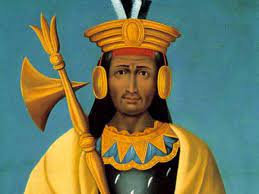
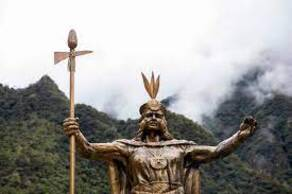
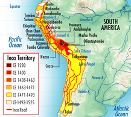
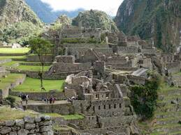
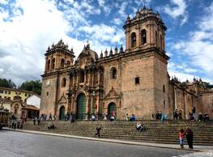
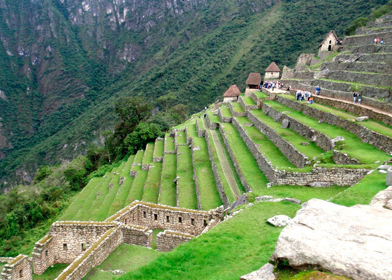

8 Years after the death of their leader a man named Pachacuti declared himself emperor and began to conquor neighboring tribes. When these people were captured they were put in his military which made the Incan empire expand rapidly.

They were very organized when it came to expantion. They had 3 methods that allowed them to expand:
-Diplomacy, which allowed them to negotiate with the idea of trade, jobs, and marriages for leaders and for when they needed brute force they had "gentle seige" intimidation
-Fortification, which allowed them to have many protective elements for their empire like forts, walls and infrastructure.
-Logistics, which allowed them to make smart decisions concerning recourses and productivity.

While these things made them very powerful they fell a little short with the lack of a written language, knowledge of Iron and Steel, and the use of the wheel and Draft Animals. As an alternative to not having a written language they created quipu which is a system to tell numbers and some letters which are believed to be early receipts.

Incans had to adapt to what they were given since they were located on a mountain. They did not have access to mortar but were still able to build very impressive buildings. They accomplished these buildings by carving and polishing these structures that were able to withstand several earthquakes for hundreds of years. With their inacessebility to the wheel this made it harder but they improvised with using ropes, logs, poles, levers and ramps.

The Incans also were very big with trade, owning a road system that spanned 12,000 miles! This road system was used for a variety of things such as connecting the 12 million people population of the Incas and trading with foreign empires. The roads were banned from ordinary people and there is no solid explination but it might have been because they wouldnt want people to destroy the roads they worked on. These roads also lead to one of the biggest centers for trade in the Incas, Cuzco, a center that was used for trade, jobs and royalty.

Another struggle that the Incan people faced was that they lived on a mountain far from any flat lands. So, they created terrace farming which allowed them to farm on the sides of the mountain. They spanned the entirety of the mountains and crops like corn, quinoa, cotton, pumpkins and cocoa leaves.

This is a great place to visit for all the amazing views from the top of the mountain and being able to walk on lands that were once used by ancient people. If you love to see ancient buildings and explore the different technology used this is the place for you. This is a very calming experience and is very beautiful.
🏠Back To Home🏠